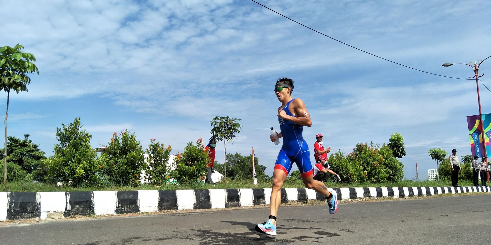
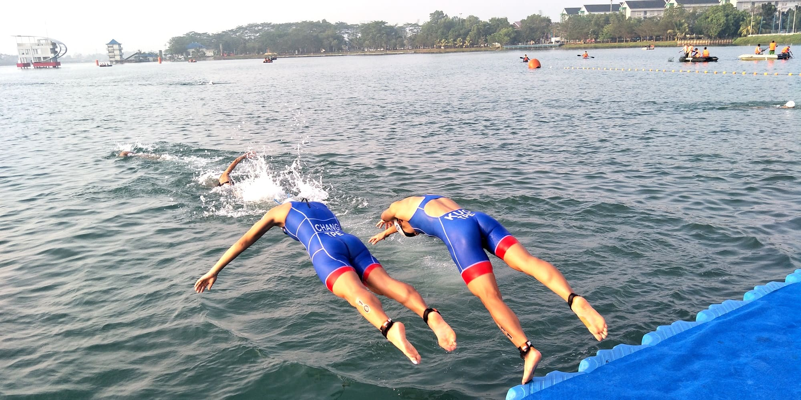

鐵人三項
20233/22
類別:競賽介紹
- 

- 
一、競賽日期：112年03月22日（星期三）上午8時30分至上午11時30分。
二、地點：校本部游泳池-->校本部校門口-->校本部田徑場(上午8時至8時30分集合)。
三、參加對象：全校學生均可報名參加。
四、競賽組別：（一人限報一組別）
(一)男學生組
(二)女學生組
五、比賽方法與規則:
每位參賽選手須於規定之時限內，按照「游泳 → 自由車 → 路跑」的順序，獨力且連續進行完成三項競賽。
三項全能比賽計時分成幾個階段：
(一)從起點的游泳項目到第一個轉換區（游泳時間）
(二)第一個轉換區停留時間（T1時間）
(三)從腳踏車項目到第二個轉換區（騎腳踏車時間）
(四)第二個轉換區停留時間（T2時間）
(五)從跑步項目到終點的時間（跑步時間）
六、實施細則：
(一)身體狀況不佳及患有心臟病、高血壓等需避免劇烈運動者，請勿參賽。
(二)所有選手需穿運動鞋，禁止赤腳、穿著釘鞋或釘鞋未裝釘亦同。
(三)比賽時請攜帶學生證進行檢錄，依學生證載明所屬系所中文名稱為報名單位，決賽未攜帶證件者即失去資格；如有疑義，須於賽前提出。